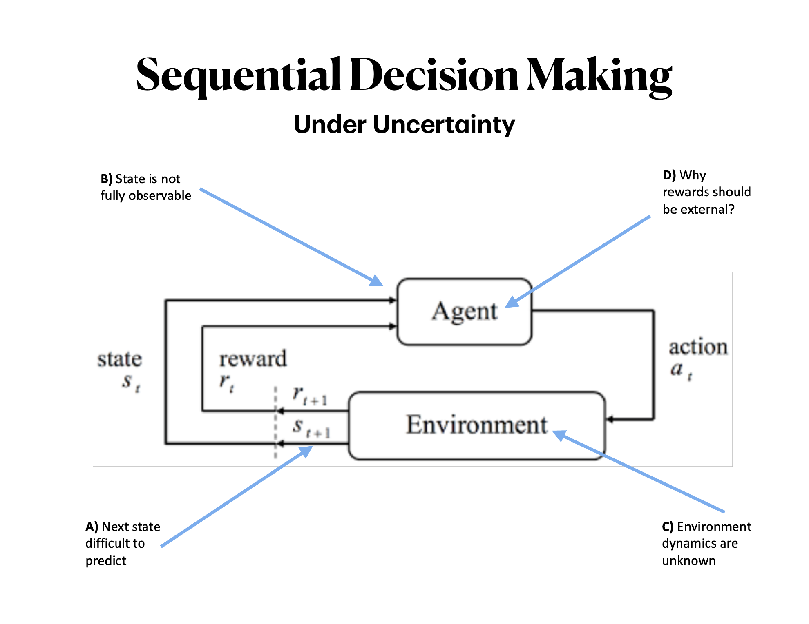
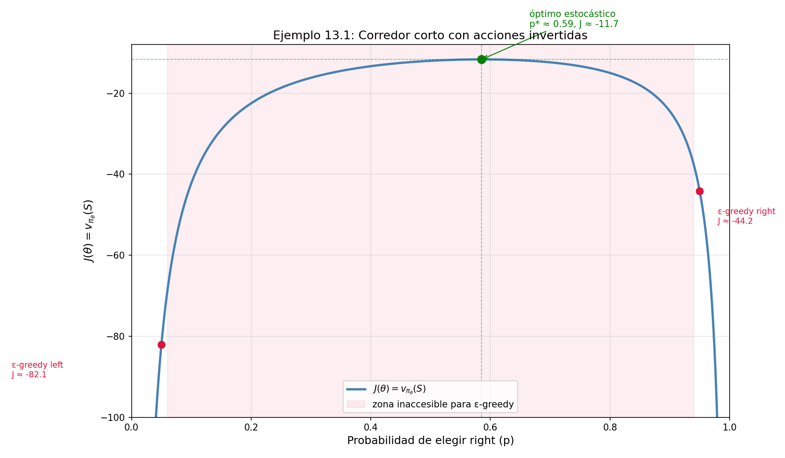
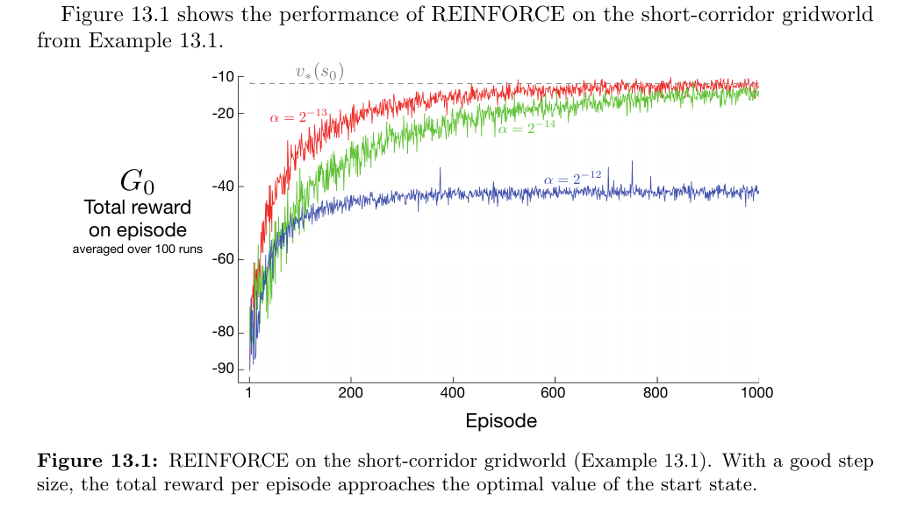
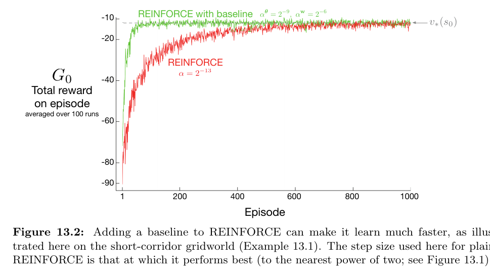
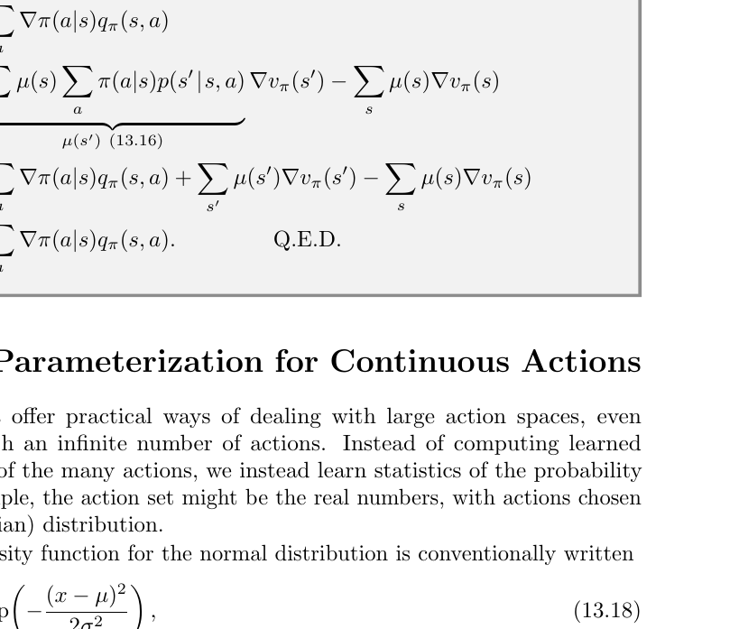

Más allá de los valores
Policy Gradient Methods · Capítulo 13 · Sutton & Barto
Ingeniero Matemático · UTFSM
abril 2026
Más allá de los valores
Aprender directamente la política
Capítulo 13 — Policy Gradient Methods
Sutton & Barto · Reinforcement Learning: An Introduction (2nd ed.)
Francisco Alfaro
Ingeniero Matemático · UTFSM
Seminario Avanzado TIC · 2026
El problema que motiva este capítulo
El curso plantea cuatro fuentes de incertidumbre en el modelo agente–entorno:
| Problema | Descripción | Estado |
|---|---|---|
| A | Siguiente estado difícil de predecir | MDP → resuelto |
| B | Estado no completamente observable | POMDP → difícil |
| C | Dinámica del entorno desconocida | RL → capítulo |
| D | ¿Recompensas deben ser externas? | Intrinsic RL |

Cap. 13 en este mapa: Cuando la dinámica es desconocida (C)
Aprender directamente \(\pi\) es más natural que aprender \(Q\) primero. Y cuando el óptimo es estocástico (B, D), es la única forma matemáticamente correcta.
¿Dónde estamos en el libro?
Hoja de ruta: S&B capítulos 2 → 13
| Capítulos | Enfoque | Política |
|---|---|---|
| 2–4 | Bandits, MDP | implícita |
| 5–7 | MC, TD, Q-learning | implícita |
| 8–12 | Aprox. de función | implícita |
| 13 | Policy Gradient | explícita |
La pregunta clave
En los capítulos anteriores, aprendemos \(Q(s,a)\) y la política emerge como subproducto.
¿Qué pasa si aprendemos \(\pi\) directamente?
Única excepción anterior: gradient bandit algorithms (Sec. 2.8) — el caso de un solo estado, sin transiciones, sin futuro. El Cap. 13 es su generalización completa al MDP. Si entendiste ese algoritmo, ya tienes la maquinaria central.
Punto de partida: el Bandit de gradiente (Cap. 2.8)
El caso más simple posible: \(k\) acciones, 1 estado, sin futuro.
Se definen preferencias \(H_t(a) \in \mathbb{R}\) y una política softmax:
\[\pi_t(a) = \frac{e^{H_t(a)}}{\sum_b e^{H_t(b)}}\]
Objetivo: maximizar \(J = \mathbb{E}[R_t] = \sum_x \pi_t(x)\, q_*(x)\)
Actualización (ascenso de gradiente):
\[H_{t+1}(a) = H_t(a) + \alpha\underbrace{(R_t - \bar{R}_t)}_{\text{señal}} \underbrace{(\mathbb{1}_{a=A_t} - \pi_t(a))}_{\text{eligibility}}\]
Los 3 ingredientes que se repiten en Cap. 13
- Softmax sobre preferencias → política diferenciable
- Baseline (\(\bar{R}_t\)) → no sesga el gradiente, reduce varianza
- Truco del log-gradiente: \(\frac{\nabla\pi}{\pi} = \nabla\ln\pi\)
Estos tres ingredientes aparecen idénticos en REINFORCE y Actor–Crítico. Solo cambia la “señal”.
Por qué el baseline no sesga el gradiente
Este es el resultado matemático más importante del Cap. 2.8 — y es la base de todo lo que sigue.
La clave: la suma de derivadas de \(\pi\) sobre todas las acciones es siempre cero.
\[\sum_x \frac{\partial \pi_t(x)}{\partial H_t(a)} = \frac{\partial}{\partial H_t(a)} \underbrace{\sum_x \pi_t(x)}_{=\;1} = 0\]
Por lo tanto, para cualquier escalar \(B_t\) que no dependa de \(x\):
\[\frac{\partial J}{\partial H_t(a)} = \sum_x \underbrace{(q_*(x) - B_t)}_{\text{señal centrada}} \frac{\partial \pi_t(x)}{\partial H_t(a)}\]
Consecuencia directa en Cap. 13
La misma identidad justifica restar \(\hat{v}(S_t, w)\) en REINFORCE:
\[\sum_a b(s)\, \nabla_\theta \pi(a|s,\theta) = b(s)\underbrace{\nabla_\theta \sum_a \pi(a|s,\theta)}_{= \nabla_\theta 1 = 0} = 0\]
El baseline nunca introduce sesgo. Solo reduce varianza.
La idea central del Cap. 13
Política parametrizada:
\[\pi(a \mid s, \theta) = \Pr\{A_t = a \mid S_t = s, \theta_t = \theta\}\]
Objetivo: maximizar \(J(\theta)\) via ascenso de gradiente:
\[\theta_{t+1} = \theta_t + \alpha \widehat{\nabla J(\theta_t)}\]
Analogía con Deep Learning
| DL | Policy Gradient |
|---|---|
| pesos \(w\) | parámetros \(\theta\) |
| loss \(\mathcal{L}\) | \(-J(\theta)\) |
| backprop | policy gradient theorem |
Dos familias de métodos
- Solo política (policy-only): \(\theta\) es lo único que se aprende
- Actor–Crítico: aprende \(\theta\) (política) y \(w\) (función de valor)
Definiciones fundamentales: \(G_t\) y \(\nabla\)
Antes de continuar, dos objetos que aparecen en cada ecuación:
El retorno \(G_t\) — suma de recompensas futuras descontadas:
\[G_t := \sum_{k=0}^{\infty} \gamma^k R_{t+k+1}\]
- \(\gamma \in [0,1]\): factor de descuento
- \(\gamma = 0\): solo importa \(R_{t+1}\) (miope)
- \(\gamma = 1\): visión infinita (caso del Cap. 13)
Recursión clave:
\[G_t = R_{t+1} + \gamma G_{t+1}\]
En el Bandit: \(G_t = R_t\) (no hay futuro).
El operador \(\nabla_\theta\) — vector de derivadas parciales:
\[\nabla_\theta f(\theta) = \begin{pmatrix} \partial f/\partial \theta_1 \\ \partial f/\partial \theta_2 \\ \vdots \\ \partial f/\partial \theta_d \end{pmatrix} \in \mathbb{R}^d\]
Apunta en la dirección de mayor crecimiento de \(f\).
En el Bandit, \(\theta\) era un escalar por acción. En el Cap. 13, \(\theta\) puede tener millones de componentes (red neuronal). La estructura matemática es idéntica.
Parametrización: softmax en preferencias
Para espacios de acción discretos:
\[\pi(a \mid s, \theta) \doteq \frac{e^{h(s,a,\theta)}}{\sum_b e^{h(s,b,\theta)}}\]
donde \(h(s,a,\theta)\) son preferencias, no valores.
Las preferencias pueden ser:
- Lineales: \(h(s,a,\theta) = \theta^\top \mathbf{x}(s,a)\)
- Red neuronal profunda (ej. AlphaGo)
Comparación crítica:
| \(\varepsilon\)-greedy | Softmax | |
|---|---|---|
| Política límite | estocástica | determinista |
| Óptimo estocástico | ✗ difícil | ✓ natural |
| Tipo | implícita | explícita |
La diferencia clave
Las preferencias son libres de crecer sin ancla. Los valores \(Q(s,a)\) convergen a valores específicos y la política nunca puede hacerse determinista con softmax sobre ellos.
⚠️ ¿Por qué no softmax sobre \(Q\)?
Intuición tentadora: tomar softmax sobre \(\hat{Q}(s,a)\)
Problema concreto:
Supón \(Q(s,a_1) = 10\), \(Q(s,a_2) = 9\)
\[\text{softmax} \Rightarrow \pi(a_1) \approx 0.73, \; \pi(a_2) \approx 0.27\]
Los valores convergen a cantidades fijas → las probabilidades nunca llegan a 0 o 1.
Con preferencias \(h(s,a,\theta)\):
- No representan valores absolutos
- Libres de crecer sin ancla
- Si el óptimo es determinista → \(h^* \to +\infty\)
- Si el óptimo es estocástico → converge a las proporciones correctas
Clave
Con preferencias, el gradiente empuja \(h(s, a^*)\) hacia \(+\infty\) si \(a^*\) es la mejor acción — algo imposible con estimaciones de \(Q\).
Ejemplo 13.1: El corredor corto
El entorno — 4 estados en línea:
S → s₂ → s₃ → G
| Estado | right |
left |
|---|---|---|
| S | → s₂ | → S (no mueve) |
| s₂ | → S | → s₃ (¡invertido!) |
| s₃ | → G | → s₂ |
- Recompensa: \(-1\) por paso
- Todos los estados tienen la misma representación: \(\mathbf{x}(s,\text{right}) = [1,0]^\top\), \(\mathbf{x}(s,\text{left}) = [0,1]^\top\)
Por qué ε-greedy falla
Como todos los estados se ven idénticos, el agente aplica la misma política en todos. Solo puede alcanzar dos puntos:
- ε-greedy right: \(J \approx -44\)
- ε-greedy left: \(J \approx -82\)
El óptimo en \(p^* \approx 0.59\) está en el interior — inaccesible por construcción.

Ejercicio 13.1: ¿Por qué \(p^* \approx 0.59\)?
Setup: política \(\pi(right) = p\) en todos los estados (representación idéntica).
Definiendo \(v_i\) = valor del estado \(i\) bajo la política \(p\):
\[v_S = -1 + p\,v_{s_2} + (1-p)\,v_S\]
\[v_{s_2} = -1 + p\,v_S + (1-p)\,v_{s_3}\]
\[v_{s_3} = -1 + p\,v_G + (1-p)\,v_{s_2} = -1 + (1-p)\,v_{s_2}\]
donde \(v_G = 0\). Resolviendo el sistema (\(\gamma = 1\)):
\[J(p) = v_S = -\frac{1}{1-p} - \frac{2}{p}\]
Maximizando: \(\frac{dJ}{dp} = -\frac{1}{(1-p)^2} + \frac{2}{p^2} = 0\)
\[p^2 = 2(1-p)^2 \implies p = \frac{\sqrt{2}}{1+\sqrt{2}} \approx 0.586\]
Lo que revela la derivación
El óptimo no está en \(p = 1\) (ir siempre a la derecha) porque en \(s_2\) ir a la derecha lleva de vuelta a \(S\). Hay un tradeoff: demasiado \(p\) alto castiga en \(s_2\), demasiado bajo en \(s_3\).
\[J(p) = -\frac{1}{1-p} - \frac{2}{p}\]
Esta función tiene exactamente la forma de la curva que vimos — cóncava, con un máximo interior.
Implicación para Policy Gradient
\(\varepsilon\)-greedy solo puede evaluar \(p \approx 0.05\) o \(p \approx 0.95\). REINFORCE encuentra el interior de la curva porque \(\theta\) varía continuamente. El gradiente \(\frac{dJ}{dp}\) guía exactamente hacia \(p^*\).
La ecuación de Bellman (fundamento de la prueba)
Antes del teorema, recordar la recursión que lo hace posible:
\[v_\pi(s) = \sum_a \pi(a|s) \sum_{s',r} p(s',r \mid s,a)\left[r + \gamma\, v_\pi(s')\right]\]
Lectura directa: el valor de estar en \(s\) es la recompensa inmediata esperada más el valor descontado del estado siguiente, promediado sobre todas las acciones y transiciones posibles.
La relación entre \(v_\pi\) y \(q_\pi\):
\[v_\pi(s) = \sum_a \pi(a|s)\, q_\pi(s,a)\]
\[q_\pi(s,a) = \sum_{s'} p(s'|s,a)\left[r + \gamma\, v_\pi(s')\right]\]
Por qué importa aquí
La prueba del Policy Gradient Theorem empieza exactamente con:
\[\nabla v_\pi(s) = \nabla\left[\sum_a \pi(a|s)\, q_\pi(s,a)\right]\]
y aplica recursión de Bellman sobre \(\nabla q_\pi(s,a)\) para desenrollar la dependencia en \(s'\), \(s''\), etc. La ecuación de Bellman es el motor de la prueba.
El Teorema del Gradiente de la Política
El problema: \(J(\theta) = v_\pi(s_0)\) depende de la distribución de estados \(\mu(s)\), que cambia con \(\theta\) a través de las transiciones del entorno — desconocidas.
Para calcular \(\nabla J\) necesitaríamos \(\nabla \mu(s)\), que involucra la dinámica \(p(s'|s,a)\).
La solución (caso episódico):
\[\boxed{\nabla J(\theta) \propto \sum_s \mu(s) \sum_a q_\pi(s,a) \nabla_\theta\pi(a|s,\theta)}\]
donde \(\mu(s) = \sum_{k=0}^{\infty} \Pr(s_0 \to s,\, k,\, \pi)\) es la distribución on-policy.
Anatomía del teorema:
\[\underbrace{\mu(s)}_{\substack{\text{fracción del} \\ \text{tiempo en } s}} \cdot \underbrace{q_\pi(s,a)}_{\substack{\text{valor de} \\ \text{la acción}}} \cdot \underbrace{\nabla_\theta\pi}_{\substack{\text{dirección} \\ \text{de mejora}}}\]
Lo no obvio
\(\nabla J(\theta)\) no involucra \(\nabla\mu(s)\).
Podemos estimar el gradiente de desempeño sin conocer la dinámica del entorno.
⚠️ Estructura de la prueba (caso continuo)
Paso 1 — Regla del producto sobre Bellman: \[\nabla v_\pi(s) = \sum_a \Big[\nabla\pi(a|s)\, q_\pi(s,a) + \pi(a|s)\, \nabla q_\pi(s,a)\Big]\]
Paso 2 — Expandir \(\nabla q_\pi\) con Bellman: \[\nabla q_\pi(s,a) = \sum_{s'} p(s'|s,a)\, \nabla v_\pi(s')\]
Paso 3 — Desenrollar recursivamente: \[\nabla v_\pi(s) = \sum_{x \in \mathcal{S}} \sum_{k=0}^{\infty} \Pr(s \to x, k, \pi) \sum_a \nabla\pi(a|x)\, q_\pi(x,a)\]
Paso 4 — \(\mu(s)\) emerge como coeficiente: \[\nabla J(\theta) \propto \sum_s \mu(s) \sum_a \nabla\pi(a|s)\, q_\pi(s,a) \quad \square\]
Intuición del desenrollado
Es exactamente la misma idea que la ecuación de Bellman — recursión que acumula el futuro — pero aplicada al gradiente, no al valor.
\(\nabla v_\pi(s)\) depende de \(\nabla v_\pi(s')\), que depende de \(\nabla v_\pi(s'')\), etc. Al desenrollar, la distribución \(\mu(s)\) emerge como el peso de cuántas veces se visita cada estado.
En el caso continuo
La prueba es análoga pero parte de \(\nabla J(\theta) = \nabla r(\pi)\) y usa la distribución estacionaria \(\mu(s)\) (ergodic assumption). El resultado final es idéntico.
REINFORCE: derivación paso a paso
Del teorema a una muestra sin sesgo:
\[\nabla J(\theta) \propto \sum_s \mu(s) \sum_a q_\pi(s,a) \nabla\pi(a|s,\theta)\]
Paso 1 — La suma sobre \(s\) ponderada por \(\mu(s)\) es una esperanza:
\[= \mathbb{E}_\pi\!\left[\sum_a q_\pi(S_t, a)\, \nabla\pi(a|S_t,\theta)\right]\]
Paso 2 — Multiplicar y dividir por \(\pi(a|S_t,\theta)\):
\[= \mathbb{E}_\pi\!\left[q_\pi(S_t, A_t)\, \frac{\nabla\pi(A_t|S_t,\theta)}{\pi(A_t|S_t,\theta)}\right]\]
Paso 3 — Identidad del log-gradiente: \(\frac{\nabla f}{f} = \nabla\ln f\):
\[= \mathbb{E}_\pi\!\left[q_\pi(S_t, A_t)\, \nabla\ln\pi(A_t|S_t,\theta)\right]\]
Paso 4 — Reemplazar \(q_\pi(S_t,A_t)\) por la muestra \(G_t\)
(válido porque \(\mathbb{E}[G_t | S_t, A_t] = q_\pi(S_t, A_t)\)):
\[\approx G_t\, \nabla\ln\pi(A_t|S_t,\theta)\]
Regla de actualización final
\[\boxed{\theta_{t+1} = \theta_t + \alpha\, G_t\, \nabla_\theta\ln\pi(A_t|S_t,\theta_t)}\]
Componente a componente:
\[\theta_i \leftarrow \theta_i + \alpha \cdot \underbrace{G_t}_{\substack{\text{qué tan bueno} \\ \text{fue el futuro}}} \cdot \underbrace{\frac{\partial\ln\pi(A_t|S_t,\theta)}{\partial\theta_i}}_{\substack{\text{cómo afecta }\theta_i \\ \text{a la prob. de }A_t}}\]
El mismo truco que en el Bandit
Paso 2 es idéntico al truco de \(\pi_t(x)/\pi_t(x)\) del Cap. 2.8. La única diferencia: \(R_t \to G_t\).
⚠️ Por qué aparece el logaritmo
La identidad matemática:
\[\nabla \ln x = \frac{\nabla x}{x} \quad \Rightarrow \quad \frac{\nabla\pi}{\pi} = \nabla\ln\pi\]
El vector \(\nabla\ln\pi\) se llama eligibility vector.
Es lo único que depende de la parametrización específica.
Ejemplo concreto (softmax lineal):
\[h(s,a,\theta) = \theta^\top \mathbf{x}(s,a)\]
\[\nabla\ln\pi(a|s,\theta) = \mathbf{x}(s,a) - \sum_b \pi(b|s,\theta)\,\mathbf{x}(s,b)\]
Feature de la acción tomada menos el promedio ponderado de features bajo la política actual.
Derivación explícita del eligibility para softmax:
Aplicando regla del cociente a \(\pi_t(x) = e^{H_t(x)}/Z\):
\[\frac{\partial\pi_t(x)}{\partial H_t(a)} = \pi_t(x)\left(\mathbb{1}_{a=x} - \pi_t(a)\right)\]
Por lo tanto:
\[\frac{\partial\ln\pi_t(x)}{\partial H_t(a)} = \mathbb{1}_{a=x} - \pi_t(a)\]
Modularidad
Si cambias la red neuronal, solo cambia el eligibility vector. El resto del algoritmo es idéntico. Esto hace que REINFORCE sea un framework, no un algoritmo fijo.
Antes de REINFORCE: el método “all-actions”
Del teorema se puede construir un estimador que usa todas las acciones:
\[\theta_{t+1} \doteq \theta_t + \alpha \sum_a \hat{q}(S_t, a, w)\, \nabla_\theta\pi(a|S_t, \theta)\]
Idea: en lugar de muestrear una sola acción \(A_t\), usar la esperanza exacta sobre \(\mathcal{A}\).
Esto es posible cuando el espacio de acciones es pequeño y discreto y tenemos una aproximación \(\hat{q}(s,a,w)\).
Ventaja
Menor varianza que REINFORCE — no hay ruido de muestrear \(A_t\).
| All-actions | REINFORCE | |
|---|---|---|
| Acciones usadas | todas | solo \(A_t\) |
| Varianza | menor | mayor |
| Costo por paso | \(O(\|\mathcal{A}\|)\) | \(O(1)\) |
| Escalabilidad | ✗ espacios grandes | ✓ general |
Por qué S&B prefiere REINFORCE
REINFORCE introduce \(A_t\) como muestra de la esperanza — funciona en espacios continuos y grandes sin necesidad de \(\hat{q}\) aprendido. El all-actions method queda como referencia prometedora (expected policy gradients en literatura reciente, Ciosek & Whiteson, 2018).
REINFORCE: pseudocódigo y convergencia
Pseudocódigo (S&B):
Input: π(a|s,θ) diferenciable, α > 0
Inicializar θ ∈ ℝ^d′
Loop (cada episodio):
Generar S₀,A₀,R₁,...,S_{T-1},A_{T-1},R_T ~ π(·|·,θ)
Loop t = 0,...,T-1:
G ← Σ_{k=t+1}^T γ^{k-t-1} R_k
θ ← θ + α γ^t G ∇ln π(A_t|S_t,θ)Propiedades:
- ✅ Sin sesgo: \(\mathbb{E}[\text{update}] \propto \nabla J\)
- ✅ Converge a óptimo local (no global) con \(\alpha\) apropiado
- ✗ Requiere episodio completo para calcular \(G_t\)
- ✗ Alta varianza en \(G_t\) → aprendizaje lento
⚠️ Sensibilidad crítica al step size \(\alpha\)
En el corredor corto, \(\alpha = 2^{-12}\) diverge, \(\alpha = 2^{-13}\) converge, \(\alpha = 2^{-14}\) converge pero muy lento. Un factor 2 en \(\alpha\) cambia el resultado radicalmente. Esta fragilidad es la motivación directa de TRPO y PPO — que restringen el tamaño del paso en espacio de política, no en espacio de parámetros.

REINFORCE con Baseline
Generalización del teorema — para cualquier \(b(s)\) independiente de \(a\):
\[\nabla J(\theta) \propto \sum_s \mu(s) \sum_a \big(q_\pi(s,a) - b(s)\big) \nabla\pi(a|s,\theta)\]
Actualización:
\[\theta_{t+1} \doteq \theta_t + \alpha \underbrace{\big(G_t - \hat{v}(S_t, w)\big)}_{\delta_t:\;\text{error de predicción}} \nabla\ln\pi(A_t|S_t,\theta_t)\]
Elección natural: \(b(S_t) = \hat{v}(S_t, w)\)
Interpretación de \(\delta_t\):
- \(G_t > \hat{v}\): acción mejor de lo esperado → reforzar
- \(G_t < \hat{v}\): peor de lo esperado → debilitar
- Sin sesgo (como en el Bandit: el \(B_t\) no cambia el gradiente esperado)

Evidencia experimental: la trayectoria de \(\theta\)
La figura de REINFORCE en el corredor muestra que \(\theta\) converge exactamente a \(p^* \approx 0.59\) — tanto con como sin baseline. El baseline no desplaza el punto de convergencia, solo acelera el camino. Esto es la confirmación experimental de que el baseline no sesga el gradiente.
Actor–Crítico: la distinción conceptual
REINFORCE con baseline usa \(\hat{v}(S_t, w)\) para estimar el valor del estado antes de la acción. No evalúa la acción en sí.
Actor–Crítico usa el critic para evaluar la acción tomada mediante bootstrapping:
\[\delta_t = \underbrace{R_{t+1} + \gamma\,\hat{v}(S_{t+1},w)}_{\text{estimación de }q_\pi(S_t,A_t)} - \hat{v}(S_t,w)\]
Pseudocódigo: One-step Actor-Critic
Calcular error TD: \(\delta \leftarrow R + \gamma \hat{v}(S', \mathbf{w}) - \hat{v}(S, \mathbf{w})\)
Actualizar Crítico: \(\mathbf{w} \leftarrow \mathbf{w} + \alpha_{\mathbf{w}} \delta \nabla \hat{v}(S, \mathbf{w})\)
Actualizar Actor: \(\theta \leftarrow \theta + \alpha_{\theta} I \delta \nabla \ln \pi(A|S, \theta)\)
Actualizar traza: \(I \leftarrow \gamma I\)
| REINFORCE + baseline | Actor–Crítico | |
|---|---|---|
| Baseline | antes de la transición | después (bootstrapping) |
| Retorno | \(G_t\) (MC) | \(G_{t:t+1}\) (TD) |
| Sesgo | sin sesgo | con sesgo |
| Varianza | alta | baja |
| Online | no (episodio completo) | sí (cada paso) |
Analogía directa con capítulos anteriores
MC vs TD en funciones de valor
= REINFORCE vs Actor–Crítico en política
Mismo tradeoff: sin sesgo pero lento vs sesgado pero rápido.
Las tres variantes Actor–Crítico
| Variante | Señal \(\delta\) | Online? | Sesgo |
|---|---|---|---|
| One-step | \(R + \gamma\hat{v}(S') - \hat{v}(S)\) | ✓ | bajo |
| Con trazas (episódico) | \(\lambda\)-return | ✓ | medio |
| Continuo | \(R - \bar{R} + \hat{v}(S') - \hat{v}(S)\) | ✓ | bajo |
Principio unificador
En los tres casos la estructura Actor–Crítico es idéntica — solo cambia qué se usa como señal \(\delta\).
El one-step es el caso más simple: fully online, incremental, sin trazas de elegibilidad. Es el análogo exacto de TD(0) en el espacio de políticas.
⚠️ Caso continuo vs episódico
Caso episódico: \[J(\theta) \doteq v_{\pi_\theta}(s_0)\]
Caso continuo: \[J(\theta) \doteq r(\pi) = \lim_{t\to\infty} \mathbb{E}[R_t \mid A_{0:t} \sim \pi]\]
El retorno diferencial: \[G_t \doteq \sum_{k=1}^{\infty}(R_{t+k} - r(\pi))\]
La intuición clave
No descuentas el tiempo — descuentas la desviación sobre la tasa promedio.
Las recompensas por encima de \(r(\pi)\) son positivas, las de abajo son negativas. Son esas desviaciones las que guían el aprendizaje.
Resultado notable:
El Policy Gradient Theorem tiene la misma forma en ambos casos. La prueba es análoga usando la distribución estacionaria \(\mu(s)\).
Políticas para acciones continuas
En lugar de probabilidades discretas, aprender una distribución Gaussiana:
\[\pi(a|s,\theta) \doteq \frac{1}{\sigma(s,\theta)\sqrt{2\pi}} \exp\!\left(-\frac{(a-\mu(s,\theta))^2}{2\sigma(s,\theta)^2}\right)\]
Lo que se aprende: estadísticos de la distribución, no probabilidades directas.
\[\mu(s,\theta) = \theta_\mu^\top \mathbf{x}^\mu(s), \quad \sigma(s,\theta) = \exp\!\left(\theta_\sigma^\top \mathbf{x}^\sigma(s)\right)\]
¿Por qué \(\exp\) para \(\sigma\)?
Garantiza positividad sin restricciones en la optimización. Se puede optimizar \(\theta_\sigma\) libremente en \(\mathbb{R}^d\).

Eligibility vector Gaussiano (dos partes):
\[\nabla\ln\pi(a|s,\theta_\mu) = \frac{a - \mu(s,\theta)}{\sigma(s,\theta)^2}\,\mathbf{x}^\mu(s)\]
\[\nabla\ln\pi(a|s,\theta_\sigma) = \left(\frac{(a-\mu)^2}{\sigma^2} - 1\right)\mathbf{x}^\sigma(s)\]
Tabla de analogías: Bandit → Policy Gradient
| Concepto | Cap. 2.8 — Bandit | Cap. 13 — Policy Gradient | Qué cambia |
|---|---|---|---|
| Parámetro | \(H_t(a) \in \mathbb{R}\) (escalar) | \(\theta \in \mathbb{R}^d\) (vector) | escalar → vector |
| Política | \(\pi_t(a) = \text{softmax}(H_t)\) | \(\pi(a\|s,\theta)\) condicionada al estado | aparece \(s\) |
| Desempeño | \(J = \mathbb{E}[R_t]\) | \(J(\theta) = v_\pi(s_0)\) | depende de \(\mu(s)\) |
| Señal | \(R_t\) (recompensa inmediata) | \(G_t\) (retorno acumulado) | \(G_t\) requiere episodio |
| Baseline | \(\bar{R}_t\) (promedio escalar) | \(\hat{v}(S_t, w)\) (función del estado) | varía con \(s\) |
| Eligibility | \(\mathbb{1}_{a=A_t} - \pi_t(a)\) (escalar) | \(\nabla\ln\pi(A_t\|S_t,\theta)\) (vector) | escalar → vector |
| Actualización | \(H_{t+1}(a) = H_t(a) + \alpha\,\delta\,\text{elig}\) | \(\theta \leftarrow \theta + \alpha\,G_t\,\nabla\ln\pi\) | misma estructura |
El único ingrediente genuinamente nuevo del Cap. 13 es el Policy Gradient Theorem — que demuestra que \(\nabla J\) es computable sin conocer la dinámica del entorno.
Mapa del capítulo
Policy Gradient Theorem [el resultado teórico central]
│
├─── REINFORCE ──────────────────────────── sin sesgo · alta varianza
│ │
│ └─── + Baseline v̂(St,w) ──────── sin sesgo · menor varianza
│ │
│ └─── bootstrapping ──── Actor–Crítico
│ ├── One-step (TD error δ)
│ ├── n-step / λ-return con trazas
│ └── Continuo (tasa promedio r(π))
│
└─── Acciones continuas: distribución Gaussiana N(μ(s,θ), σ²(s,θ))El hilo conductor
Siempre ascenso de gradiente en \(J(\theta)\) — con distintos estimadores de la señal. La tensión central es el tradeoff sesgo-varianza: sin sesgo pero lento (Monte Carlo) vs sesgado pero rápido (bootstrapping). Es el mismo tradeoff que MC vs TD en capítulos anteriores, ahora aplicado a aprender la política.
Comparación: Value-based vs Policy Gradient
| Dimensión | Action-value | Policy Gradient |
|---|---|---|
| Política | implícita, derivada | explícita, primer objeto |
| Óptimo estocástico | difícil de capturar | natural |
| Espacios continuos | problemático (\(\max_a\)) | directo |
| Convergencia | menos garantías | garantías a óptimo local |
| Varianza | menor (bootstrapping) | mayor (Monte Carlo) |
| Sesgo | posible | sin sesgo (REINFORCE) |
| ¿Cuándo elegir? | espacios discretos, \(Q\) simple | política simple, acciones continuas |
“Today they are less well understood in some respects, but a subject of excitement and ongoing research.” — Sutton & Barto, Cap. 13
Convergencia: más sólida, pero local
Policy Gradient garantiza convergencia porque la política depende continuamente de \(\theta\) — pequeños cambios en \(\theta\) implican pequeños cambios en \(\pi\). Esto evita los saltos abruptos del \(\varepsilon\)-greedy. Sin embargo, la garantía es a un óptimo local, no global. En paisajes no cóncavos puede haber múltiples óptimos locales. Esta limitación motiva los métodos de gradiente natural (TRPO) que usan la geometría de la variedad de políticas para dar pasos más informados.
Conexión con el estado del arte
| Algoritmo | Qué usa de Cap. 13 | Año |
|---|---|---|
| A3C / A2C | Actor–Crítico one-step, múltiples agentes | 2016 |
| TRPO | Gradiente natural de política + restricción KL | 2015 |
| PPO | REINFORCE con baseline + clip del ratio \(\pi\) | 2017 |
| SAC | Actor–Crítico continuo + entropía como baseline | 2018 |
| RLHF (ChatGPT, Claude) | Política = LLM, reward model = critic | 2022+ |
La actualización de PPO en términos del Cap. 13
\[\theta \leftarrow \theta + \alpha \cdot \hat{\delta}_t \cdot \nabla_\theta\ln\pi(A_t|S_t,\theta)\]
Es exactamente REINFORCE con baseline (el \(\delta_t\) estimado por el critic), con una restricción adicional: el ratio \(\pi_\text{nuevo}(a|s) / \pi_\text{viejo}(a|s)\) se recorta para evitar pasos demasiado grandes. El eligibility vector \(\nabla\ln\pi\) está en el corazón de todos estos sistemas.
Tres resultados para llevarse
1. Policy Gradient Theorem
Resuelve el problema de la dependencia desconocida en \(\mu(s)\).
\[\nabla J \propto \sum_s \mu(s) \sum_a q_\pi \nabla\pi\]
Sin él, el ascenso de gradiente no es viable.
2. REINFORCE
El método canónico: simple, sin sesgo, pero con alta varianza.
\[\theta \leftarrow \theta + \alpha G_t \nabla\ln\pi\]
Base de todos los algoritmos modernos de policy gradient.
3. Actor–Crítico
Cierra la brecha con TD: sesgo controlado a cambio de varianza reducida.
\[\delta_t = R + \gamma\hat{v}(S') - \hat{v}(S)\]
El framework dominante en Deep RL actual.
La pregunta para tu proyecto
¿Cuándo en tu problema tiene más sentido aprender \(\pi\) directamente que aprender \(Q\) primero? ¿El óptimo podría ser estocástico? ¿El espacio de acciones es continuo?
¿Preguntas?
Francisco Alfaro
Ingeniero Matemático · UTFSM
Seminario Avanzado TIC · Aprendizaje por Refuerzo · 2026